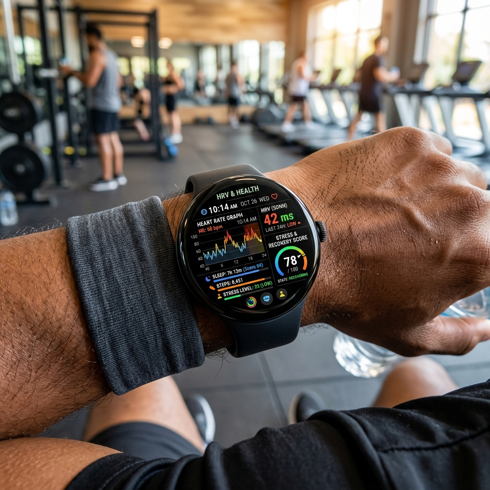

If you've spent any time researching fitness tracking and recovery optimization, you've likely run across the term Heart Rate Variability (HRV). Once a niche metric monitored only by elite athletes and clinical cardiologists, HRV has become a mainstream wellness standard. Modern Wear OS smartwatches can measure this delicate metric while you sleep or rest, offering a window into how your body is responding to physical training, mental stress, and illness.
But what exactly is HRV, how does your smartwatch track it, and how should you interpret the data to improve your workout recovery? In this guide, we'll demystify Heart Rate Variability on Wear OS, examine the science behind autonomic stress monitoring, and show you how to use it to optimize your wellness routine.

What is Heart Rate Variability (HRV)?

Many people assume that a healthy heart beats like a metronome—at a perfectly steady rhythm (e.g., exactly 60 beats per minute, or one beat per second). In reality, a healthy heart is not a clock. The time gap between consecutive heartbeats (measured in milliseconds) fluctuates constantly. For example, the time between beat 1 and beat 2 might be 950ms, while the time between beat 2 and beat 3 might be 1050ms. This variation is Heart Rate Variability.
HRV is directly controlled by your Autonomic Nervous System (ANS), which is split into two branches:
- Sympathetic Nervous System (SNS): The "Fight or Flight" branch. When you are stressed, exercising, or ill, the SNS takes over, releasing adrenaline, speeding up your pulse, and decreasing the variation between beats (lower HRV).
- Parasympathetic Nervous System (PNS): The "Rest and Digest" branch. When your body is relaxed and recovering, the PNS takes control, slowing your heart rate and increasing the variations between beats (higher HRV).
Consequently, a high HRV indicates that your body is rested, resilient, and ready to take on stress, while a low HRV suggests that your nervous system is unbalanced and fatigued.
How Wear OS Watches Measure HRV
Wear OS smartwatches measure HRV using their optical photoplethysmography (PPG) sensors. By shining green light onto your wrist, the sensor measures changes in blood volume with every beat. The watch's software calculates the millisecond-level intervals between pulse waves (specifically calculating the Root Mean Square of Successive Differences, or RMSSD).
Because physical movement, breathing patterns, and talking can skew PPG readings, smartwatches generally calculate your baseline HRV in the background during deep sleep cycles. Measuring during sleep ensures that your body is in a resting state, providing a clean baseline for day-to-day comparison.
Pro Tip: Wear Your Watch to Bed
Since reliable HRV calculations require consistent resting states, you must wear your watch to sleep. Make sure the watch band is snug (not loose) so the PPG optical sensors can capture clean heart rhythms without light leaks or movement interference.
Viewing HRV: Galaxy Watch vs. Pixel Watch
Both major Wear OS players capture HRV, but they integrate it into different parts of their software:
On Samsung Galaxy Watch (Samsung Health):
Samsung tracks HRV overnight and uses it to calculate your daily Stress Levels and sleep recovery metrics. While the Samsung Health watch app does not always display the raw RMSSD millisecond score on your wrist, you can view your detailed daily and weekly HRV charts by opening the Samsung Health app on your phone and selecting the Sleep or Stress tiles.
On Google Pixel Watch (Fitbit):
Fitbit on the Pixel Watch places HRV front and center. You can view your raw overnight HRV averages in the Health Metrics dashboard of the Fitbit mobile app. Additionally, Fitbit incorporates your HRV baseline into your daily Readiness Score. A drop in overnight HRV compared to your personal baseline will lower your readiness rating, advising you to opt for active recovery instead of a heavy workout.
Factors Affecting HRV
Your HRV score changes daily based on various physiological inputs. Let's examine what pushes your scores up or down:
| Factor | Impact on HRV | Nervous System Response |
|---|---|---|
| Quality Sleep | Raises HRV (Positive) | Enhances parasympathetic rest and repair. |
| Alcohol Consumption | Lowers HRV (Negative) | Alcohol acts as a stressor, activating the sympathetic flight mode. |
| Overtraining / Intense Gym Sessions | Lowers HRV (Negative) | Temporary physical stress decreases variability during initial recovery. |
| Hydration & Clean Diet | Raises HRV (Positive) | Minimizes internal metabolic stress, aiding recovery. |
| Acute Illness (e.g. Flu, Cold) | Lowers HRV (Negative) | Immune response triggers stress pathways, often dropping HRV hours before symptoms appear. |
How to Use HRV to Train Smarter
The most important rule of HRV tracking is: **do not compare your numbers to other people**. A "normal" HRV can range anywhere from 20ms to over 100ms depending on age, genetics, gender, and fitness level. Instead, focus on your personal baseline.
If your overnight HRV is within your normal range, it indicates your body has recovered, and you can push your training limits. If your HRV dips significantly below your weekly baseline, your body is under stress. Use that low-HRV day for light stretching, walking, or meditation to allow your autonomic nervous system to return to a state of balance.
By leveraging your Wear OS smartwatch's heart rate sensor to monitor Heart Rate Variability, you can train smarter, prevent overtraining syndrome, and gain a deeper understanding of your body's recovery cycles.